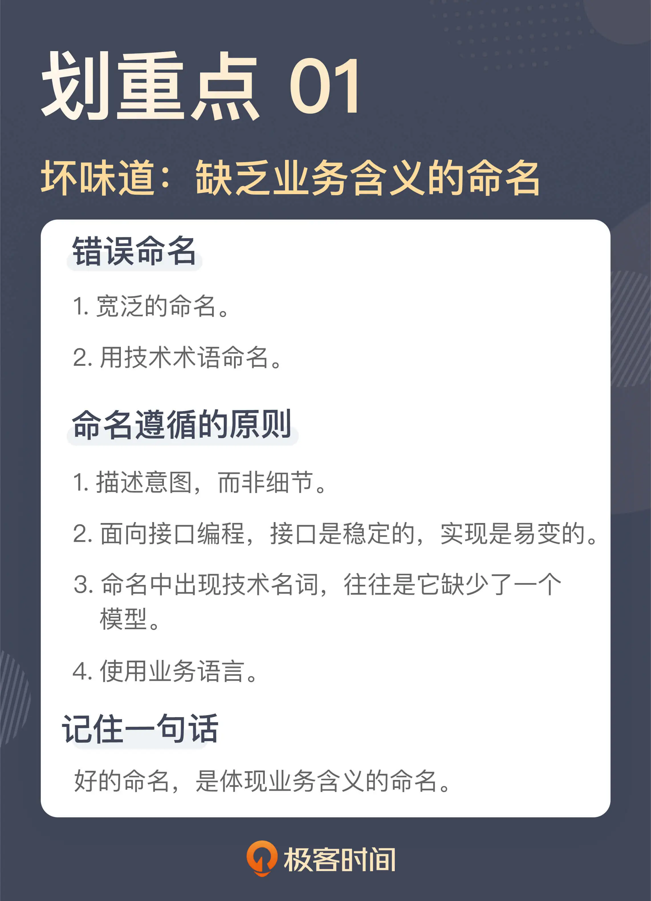

- 00 开篇词 这一次，我们从“丑”代码出发.md.html
- 01 缺乏业务含义的命名：如何精准命名？.md.html
- 02 乱用英语：站在中国人的视角来看英文命名.md.html
- 03 重复代码：简单需求到处修改，怎么办？.md.html
- 04 长函数：为什么你总是不可避免地写出长函数？.md.html
- 05 大类：如何避免写出难以理解的大类？.md.html
- 06 长参数列表：如何处理不同类型的长参数？.md.html
- 07 滥用控制语句：出现控制结构，多半是错误的提示.md.html
- 08 缺乏封装：如何应对火车代码和基本类型偏执问题？.md.html
- 09 可变的数据：不要让你的代码“失控”.md.html
- 10 变量声明与赋值分离：普通的变量声明，怎么也有坏味道？.md.html
- 11 依赖混乱：你可能还没发现问题，代码就已经无法挽救了.md.html
- 12 不一致的代码：为什么你的代码总被吐槽难懂？.md.html
- 13 落后的代码风格：使用“新”的语言特性和程序库升级你的代码.md.html
- 14 多久进行一次代码评审最合适？.md.html
- 15 新需求破坏了代码，怎么办？.md.html
- 16 熊节：什么代码应该被重构？.md.html
- 17 课前作业点评：发现“你”代码里的坏味道.md.html
- 结束语 写代码是一件可以一生精进的事.md.html
- 捐赠
01 缺乏业务含义的命名：如何精准命名？
你好，我是郑晔。
讲写代码的书通常都会从命名开始讲，《[程序设计实践]》如此，《[代码整洁之道]》亦然。所以，我们这个讲代码坏味道的专栏，也遵循传统，从命名开始讲。
不过，也许你会说：“我知道，命名不就是不能用 abcxyz 命名，名字要有意义嘛，这有什么好讲的。”然而，即便懂得了名字要有意义这个道理，很多程序员依然无法从命名的泥潭中挣脱出来。
不精准的命名
我们先来看一段代码：
public void processChapter(long chapterId) {
Chapter chapter = this.repository.findByChapterId(chapterId);
if (chapter == null) {
throw new IllegalArgumentException("Unknown chapter [" + chapterId + "]");
}
chapter.setTranslationState(TranslationState.TRANSLATING);
this.repository.save(chapter);
}
这是一段看上去还挺正常的代码，甚至以很多团队的标准来看，这段代码写得还不错。但如果我问你，这段代码是做什么的。你就需要调动全部注意力，去认真阅读这段代码，找出其中的逻辑。经过阅读我们发现，这段代码做的就是把一个章节的翻译状态改成翻译中。
问题来了，为什么你需要阅读这段代码的细节，才能知道这段代码是做什么的？
问题就出在函数名上。这个函数的名字叫 processChapter（处理章节），这个函数确实是在处理章节，但是，这个名字太过宽泛。如果说“将章节的翻译状态改成翻译中”叫做处理章节，那么“将章节的翻译状态改成翻译完”是不是也叫处理章节呢？“修改章节内容”是不是也叫处理章节呢？换句话说，如果各种场景都能够叫处理章节，那么处理章节就是一个过于宽泛的名字，没有错，但不精准。
这就是一类典型的命名问题，从表面上看，这个名字是有含义的，但实际上，它并不能有效地反映这段代码的含义。如果说我在做的是一个信息处理系统，你根本无法判断，我做是一个电商平台，还是一个图书管理系统，从沟通的角度看，这就不是一个有效的沟通。要想理解它，你需要消耗大量认知成本，无论是时间，还是精力。
命名过于宽泛，不能精准描述，这是很多代码在命名上存在的严重问题，也是代码难以理解的根源所在。
或许这么说你的印象还是不深刻，我们看看下面这些词是不是经常出现在你的代码里：data、info、flag、process、handle、build、maintain、manage、modify 等等。这些名字都属于典型的过于宽泛的名字，当这些名字出现在你的代码里，多半是写代码的人当时没有想好用什么名字，就开始写代码了。我相信，只要稍微仔细想想，类似的名字你一定还能想出不少来。
回到前面那段代码上，如果它不叫“处理章节”，那应该叫什么呢？首先，命名要能够描述出这段代码在做的事情。这段代码在做的事情就是“将章节修改为翻译中”。那是不是它就应该叫 changeChapterToTranslating 呢？
不可否认，相比于“处理章节”，changeChapterToTranslating 这个名字已经进了一步，然而，它也不算是一个好名字，因为它更多的是在描述这段代码在做的细节。我们之所以要将一段代码封装起来，一个重要的原因就是，我们不想知道那么多的细节。如果把细节平铺开来，那本质上和直接阅读代码细节差别并不大。
所以，一个好的名字应该描述意图，而非细节。
就这段代码而言， 我们为什么要把翻译状态修改成翻译中，这一定是有原因的，也就是意图。具体到这里的业务，我们把翻译状态修改成翻译中，是因为我们在这里开启了一个翻译的过程。所以，这段函数应该命名 startTranslation。
public void startTranslation(long chapterId) {
Chapter chapter = this.repository.findByChapterId(chapterId);
if (chapter == null) {
throw new IllegalArgumentException("Unknown chapter [" + chapterId + "]");
}
chapter.setTranslationState(TranslationState.TRANSLATING);
this.repository.save(chapter);
}
用技术术语命名
我们再来看一段代码：
List<Book> bookList = service.getBooks();
可以说这是一段常见得不能再常见的代码了，但这段代码却隐藏另外一个典型得不能再典型的问题：用技术术语命名。
这个 bookList 变量之所以叫 bookList，原因就是它声明的类型是 List。这种命名在代码中几乎是随处可见的，比如 xxxMap、xxxSet。
这是一种不费脑子的命名方式，但是，这种命名却会带来很多问题，因为它是一种基于实现细节的命名方式。
我们都知道，编程有一个重要的原则是面向接口编程，这个原则从另外一个角度理解，就是不要面向实现编程，因为接口是稳定的，而实现是易变的。虽然在大多数人的理解里，这个原则是针对类型的，但在命名上，我们也应该遵循同样的原则。为什么？我举个例子你就知道了。
比如，如果我发现，我现在需要的是一个不重复的作品集合，也就是说，我需要把这个变量的类型从 List 改成 Set。变量类型你一定会改，但变量名你会改吗？这还真不一定，一旦出现遗忘，就会出现一个奇特的现象，一个叫 bookList 的变量，它的类型是一个 Set。这样，一个新的混淆就此产生了。
那有什么更好的名字吗？我们需要一个更面向意图的名字。其实，我们在这段代码里真正要表达的是拿到了一堆书，所以，这个名字可以命名成 books。
List<Book> books = service.getBooks();
也许你发现了，这个名字其实更简单，但从表意的程度上来说，它却是一个更有效的名字。
虽然这里我们只是以变量为例说明了以技术术语命名存在的问题，事实上，在实际的代码中，技术名词的出现，往往就代表着它缺少了一个应有的模型。
比如，在业务代码里如果直接出现了 Redis：
public Book getByIsbn(String isbn) {
Book cachedBook = redisBookStore.get(isbn);
if (cachedBook != null) {
return cachedBook;
}
Book book = doGetByIsbn(isbn);
redisBookStore.put(isbn, book);
return book;
}
通常来说，这里真正需要的是一个缓存。Redis 是缓存这个模型的一个实现：
public Book getByIsbn(String isbn) {
Book cachedBook = cache.get(isbn);
if (cachedBook != null) {
return cachedBook;
}
Book book = doGetByIsbn(isbn);
cache.put(isbn, book);
return book;
}
再进一步，缓存这个概念其实也是一个技术术语，从某种意义上说，它也不应该出现在业务代码中。这方面做得比较好的是 Spring。使用 Spring 框架时，如果需要缓存，我们通常是加上一个 Annotation（注解）：
@Cacheable("books")
public Book getByIsbn(String isbn) {
...
}
程序员之所以喜欢用技术名词去命名，一方面是因为，这是大家习惯的语言，另一方面也是因为程序员学习写代码，很大程度上是参考别人的代码，而行业里面优秀的代码常常是一些开源项目，而这些开源项目往往是技术类的项目。在一个技术类的项目中，这些技术术语其实就是它的业务语言。但对于业务项目，这个说法就必须重新审视了。
如果这个部分的代码确实就是处理一些技术，使用技术术语无可厚非，但如果是在处理业务，就要尽可能把技术术语隔离开来。
用业务语言写代码
无论是不精准的命名也好，技术名词也罢，归根结底，体现的是同一个问题：对业务理解不到位。
我在《[10x 程序员工作法]》专栏中曾经说过，编写可维护的代码要使用业务语言。怎么才知道自己的命名是否用的是业务语言呢？一种简单的做法就是，把这个词讲给产品经理，看他知不知道是怎么回事。
从团队的角度看，让每个人根据自己的理解来命名，确实就有可能出现千奇百怪的名字，所以，一个良好的团队实践是，建立团队的词汇表，让团队成员有信息可以参考。
团队对于业务有了共同理解，我们也许就可以发现一些更高级的坏味道，比如说下面这个函数声明：
public void approveChapter(long chapterId, long userId) {
...
}
这个函数的意图是，确认章节内容审核通过。这里有一个问题，chapterId 是审核章节的 ID，这个没问题，但 userId 是什么呢？了解了一下背景，我们才知道，之所以这里要有一个 userId，是因为这里需要记录一下审核人的信息，这个 userId 就是审核人的 userId。
你看，通过业务的分析，我们会发现，这个 userId 并不是一个好的命名，因为它还需要更多的解释，更好的命名是 reviewerUserId，之所以起这个名字，因为这个用户在这个场景下扮演的角色是审核人（Reviewer）。
public void approveChapter(long chapterId, long reviewerUserId) {
...
}
从某种意义上来说，这个坏味道也是一种不精准的命名，但它不是那种一眼可见的坏味道，而是需要在业务层面上再进行讨论，所以，它是一种更高级的坏味道。
我初入职场的时候，有一次为一个名字陷入了沉思，一个工作经验丰富的同事对此的评价是：你开始进阶了。确实，能够意识到自己的命名有问题，是程序员进阶的第一步。
总结时刻
我们今天讲了两个典型的命名坏味道：
命名是软件开发中两件难事之一（另一个难事是缓存失效），不好的命名本质上是增加我们的认知成本，同样也增加了后来人（包括我们自己）维护代码的成本。
好的命名要体现出这段代码在做的事情，而无需展开代码了解其中的细节，这是最低的要求。再进一步，好的命名要准确地体现意图，而不是实现细节。更高的要求是，用业务语言写代码。
至此，我们已经对命名有了一个更深入的认识。下一讲，我们来说说国外那些经典的讲编码的书都不曾覆盖到的一个话题：英文命名。
如果今天的内容你只能记住一件事，那请记住：好的命名，是体现业务含义的命名。

思考题
前面我们提到了一些代码中常见的不精准的命名所用的词汇，你还能想到哪些词呢？欢迎在留言区分享你的想法。也欢迎你把这节课分享给你身边对命名问题感到困惑的朋友。
感谢阅读，我们下一讲再见！
© 2019 - 2023 Liangliang Lee. Powered by gin and hexo-theme-book.